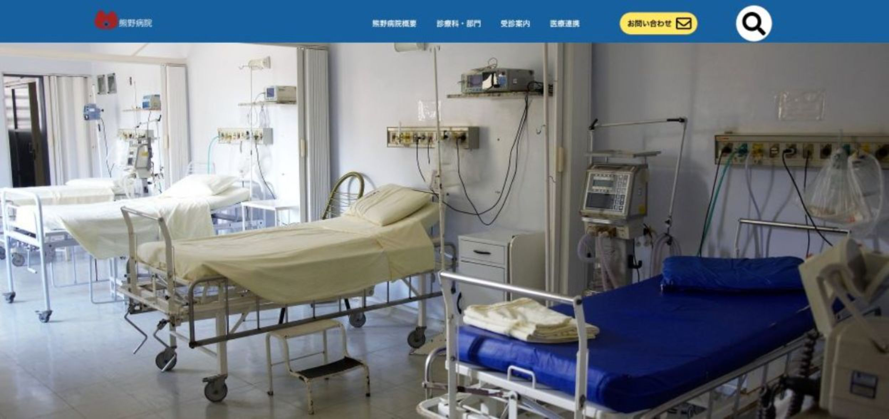
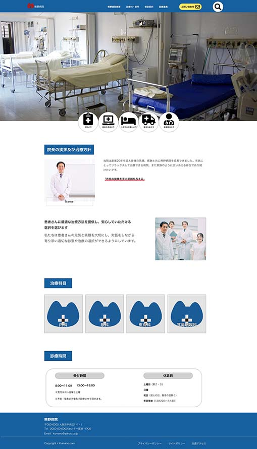

コンセプト
患者さんに安心してもらえて来やすい病院。 イメージカラーは安心感を与える青色にしています。院長や他の医者の人の画像を 笑顔に明るい感じにしています。ロゴは熊野病院なので熊の形したロゴと十字マーク を入れてます。
制作期間：1日
制作ツール：XD、イラストレター

患者さんに安心してもらえて来やすい病院。 イメージカラーは安心感を与える青色にしています。院長や他の医者の人の画像を 笑顔に明るい感じにしています。ロゴは熊野病院なので熊の形したロゴと十字マーク を入れてます。
制作期間：1日
制作ツール：XD、イラストレター